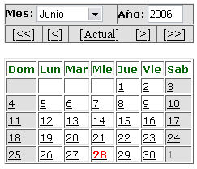

correspondiente
al calendario, usualmente a la derecha de la fecha a capturar.
correspondiente
al calendario, usualmente a la derecha de la fecha a capturar.Uso del Aplicativo
Es un selector de fechas válidas y bien formadas que se asocia a un campo de captura de fechas como asistente del usuario.
Despliega un calendario válido donde a través de una interfaz sencilla y gráfica permite la navegación y selección de una fecha pasada o futura con las consideraciones nominativas y excepcionales del calendario gregoriano.
El calendario se activa al seleccionar el ícono correspondiente
al calendario, usualmente a la derecha de la fecha a capturar.
Este ícono despliega una ventana independiente donde se ubicará la fecha deseada marcando en la plantilla el día correspondiente.

En esta ventana es posible cambiar el año al digitar el año correspondiente en el campo superior derecho, así como el mes en el selector superior izquierdo.
Otra forma de ubicar el calendario deseado es ubicarse en relación al actual, que depende de la fecha del sistema; para ello se selecciona la palabra "Actual" en el centro de la segunda línea.
Desde el mes seleccionado es posible desplazarse hacia adelante o hacia atrás en el tiempo utilizando las guías de la segunda línea, junto a la palabra "Actual" con la siguiente interpretación.
"<<" Resta un año al calendario mostrado actualmente.
"<" Resta un mes al calendario mostrado actualmente.
">" Suma un mes al calendario mostrado actualmente.
">>" Suma un año al calendario mostrado actualmente.
En la edición de una fecha, la fecha actual estará resaltada en el calendario que se desplegará inicialmente, en el caso de una nueva fecha, se desplegará el día actual del sistema a menos que exista un valor por omisión en el campo.
La selección de la fecha es simplemente el marcar con el cursor sobre el día deseado en el calendario desplegado.